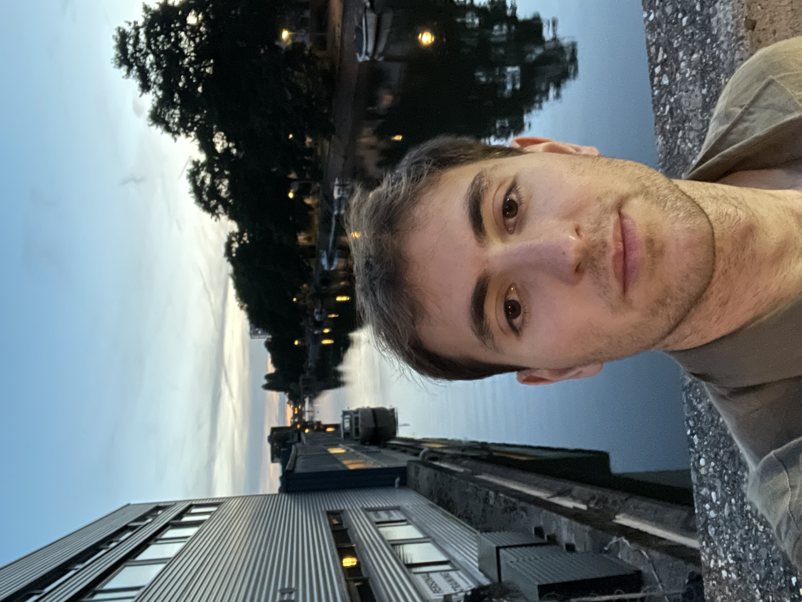

Hi, my name is Oliver Zain Hannaoui. I am currently a PhD candidate in Statistics & Data Science at Carnegie Mellon. Previously, I spent a year in Paris completing an M1 in Applied Mathematics and Statistics at the Polytechnic Institute of Paris, hosted by École Polytechnique. Prior to that, I spent two formative years in New York City as a Senior Research Analyst at the Federal Reserve Bank of New York after graduating with bachelor's degrees in Economics and Statistics from the University of California, Davis.